Doors from Superior Trade Frames, Denny
Composite, uPVC, aluminium and patio doors, for the trade and DIY. Brands from our posts: Portico doors, and House of Glass (Scotland) for decorative glass.
"When a customer knows exactly what he wants for his own house... we can do that"

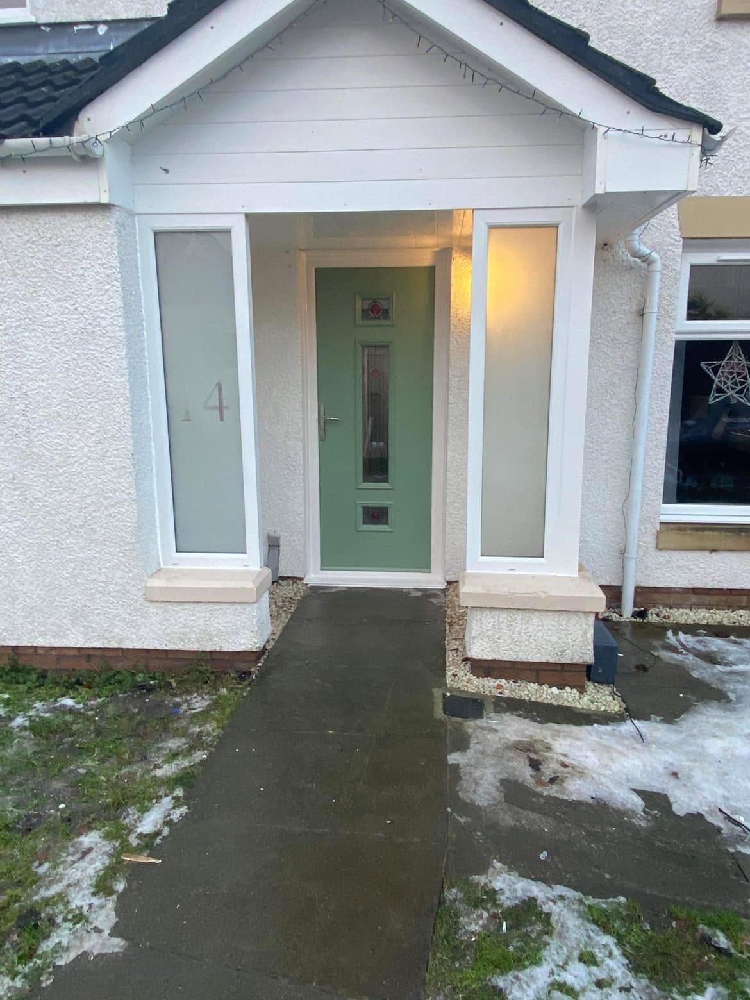
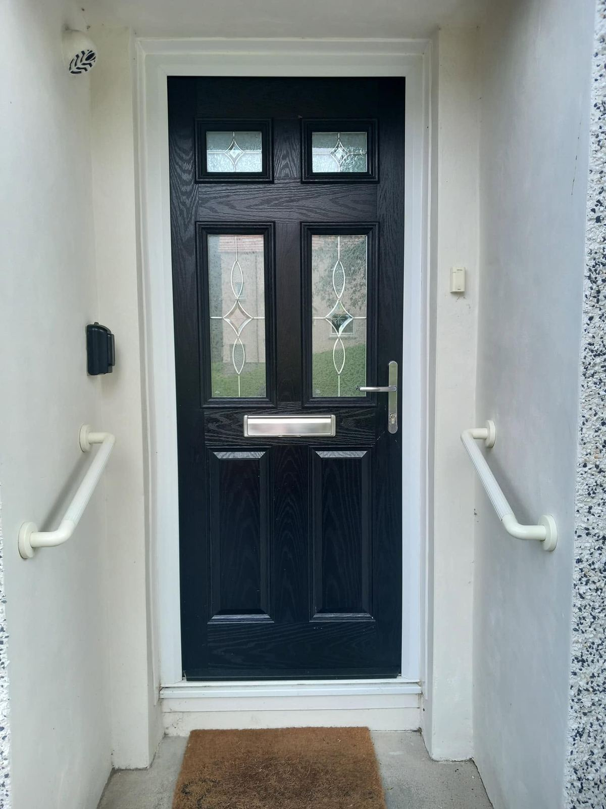
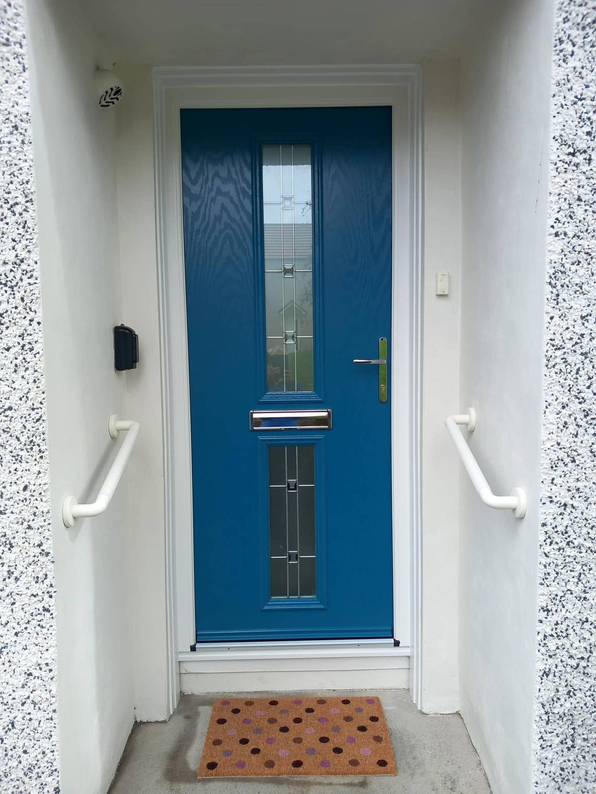
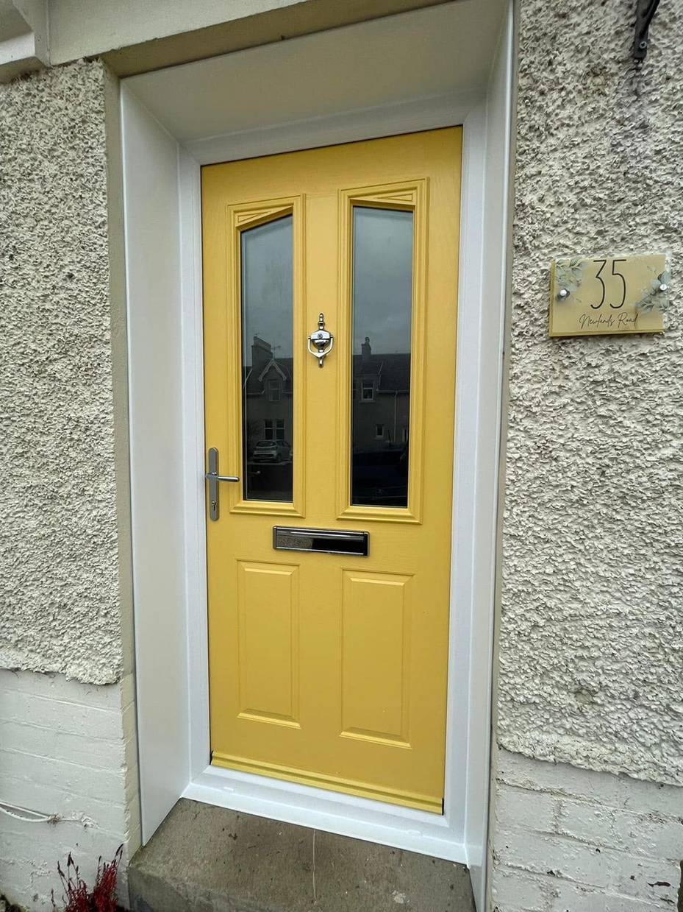
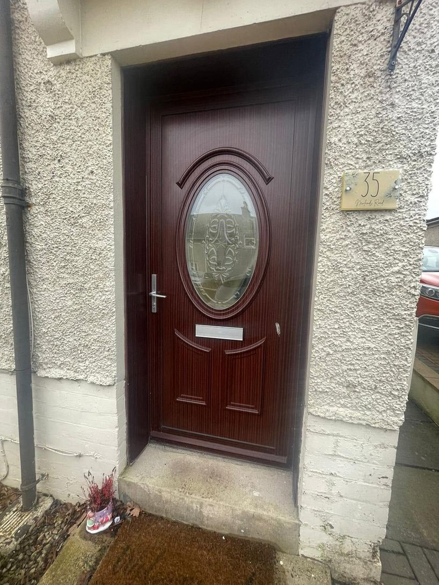
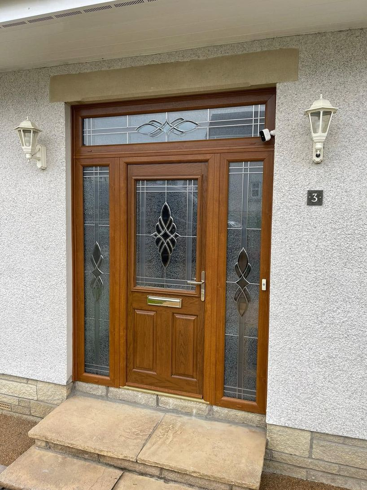
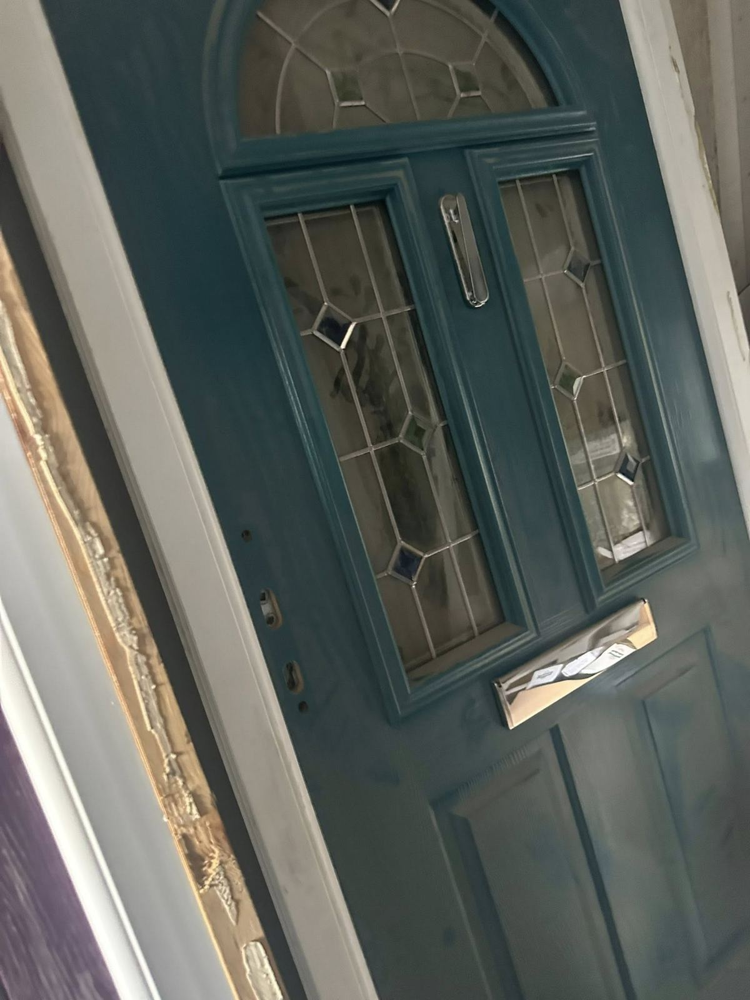
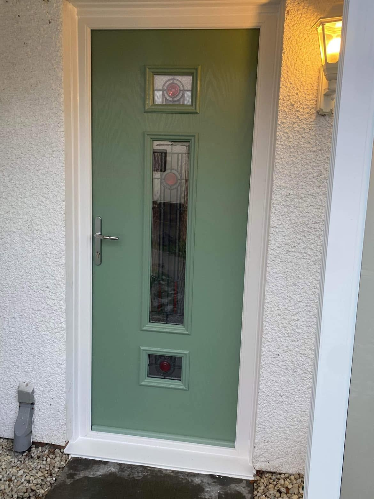
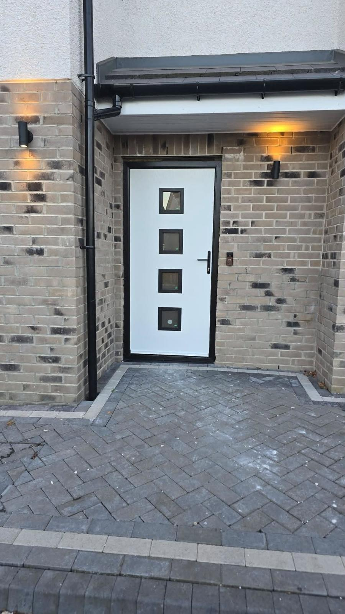
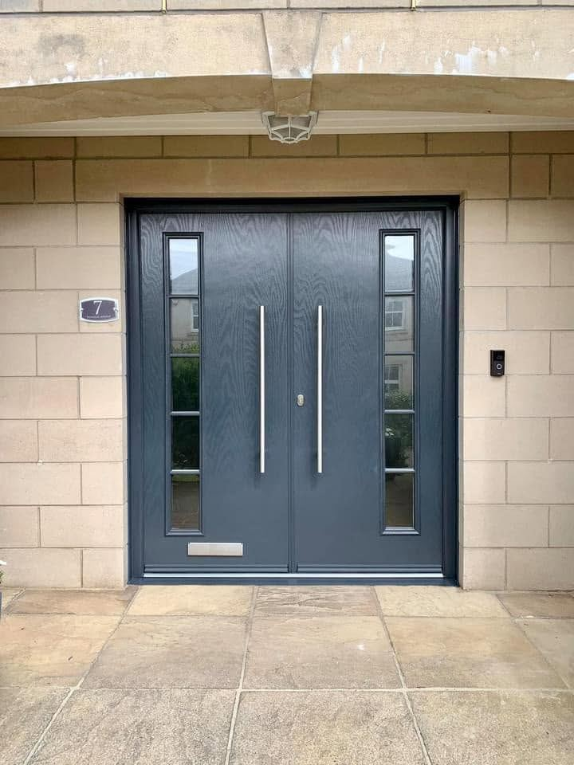
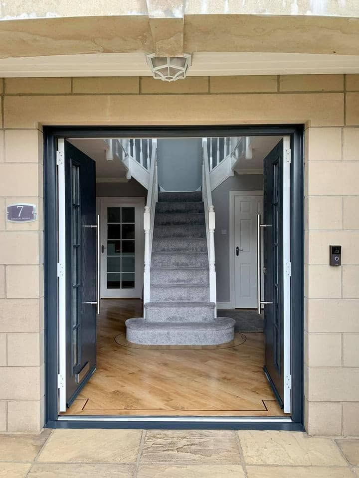
Still to fill in
To confirm with Donna: the door styles and colours you supply.
To confirm with Donna: lead times.
To confirm with Donna: whether you fit, or supply only.
To confirm with Donna: guarantees.